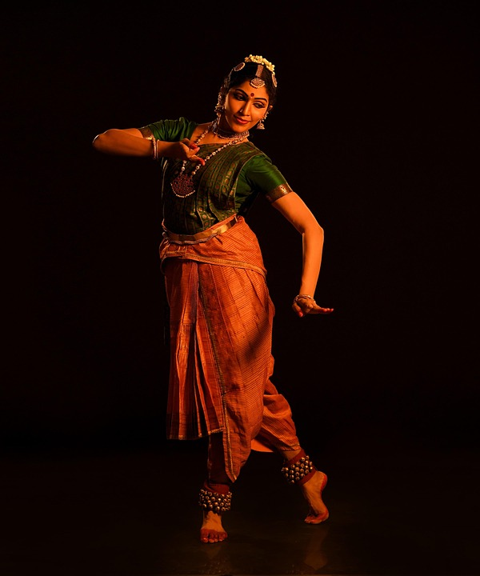

Bharatanatyam, a pre-eminent Indian classical dance form presumably the oldest classical dance heritage of India is regarded as mother of many other Indian classical dance forms. Conventionally a solo dance performed only by women, it initiated in the Hindu temples of Tamil Nadu and eventually flourished in South India. Theoretical base of this form traces back to ‘Natya Shastra’, the ancient Sanskrit Hindu text on the performing arts. A form of illustrative anecdote of Hindu religious themes and spiritual ideas emoted by dancer with excellent footwork and impressive gestures its performance repertoire includes nrita, nritya and natya. Accompanists include a singer, music and particularly the guru who directs and conducts the performance. It also continues to inspire several art forms including paintings and sculptures starting from the spectacular 6th to 9th century CE temple sculptures.
The Bharatnatyam dancer is accompanied by a nattuvanar (or taladhari) that is a vocalist who generally conducts the whole performance, a part often executed by the guru. The person can also play the cymbals or any other instrument. The music associated with Bharatanatyam is in South India’s Carnatic style and instruments played comprise of cymbals, the flute, a long pipe horn called nagaswaram, a drum called mridangam and veena. The verses recited during performance are in Sanskrit, Tamil, Kannada and Telugu.
Bharatanatyam, one of the oldest classical dance forms of India originating from Tamil Nadu, is renowned for its intricate movements, expressive gestures, and vibrant storytelling. The costume of Bharatanatyam is designed to enhance the dancer’s movements and highlight the geometric patterns and poses characteristic of the dance. Female dancers traditionally wear a sari, usually made of silk, which is draped in a unique style with pleats in the front that fan out gracefully during dance poses. The blouse is fitted, and the sari is often brightly colored with contrasting borders, creating a striking visual effect. Male dancers wear a dhoti with a fitted upper garment or angavastram, allowing freedom of movement while maintaining traditional aesthetics. Both male and female dancers adorn themselves with elaborate temple-style jewelry, including necklaces, earrings, bangles, armlets, waist belts, and ankle bells (ghungroo), which emphasize rhythmic footwork. The head is decorated with flowers and a traditional hairpiece, often including a sun-and-moon ornament on the forehead, while subtle makeup highlights the eyes and facial expressions essential for storytelling. Overall, the Bharatanatyam costume is a harmonious combination of elegance, tradition, and functionality, designed to complement the dynamic and expressive nature of the dance.
|  | Bharatanatyam Dance Form |